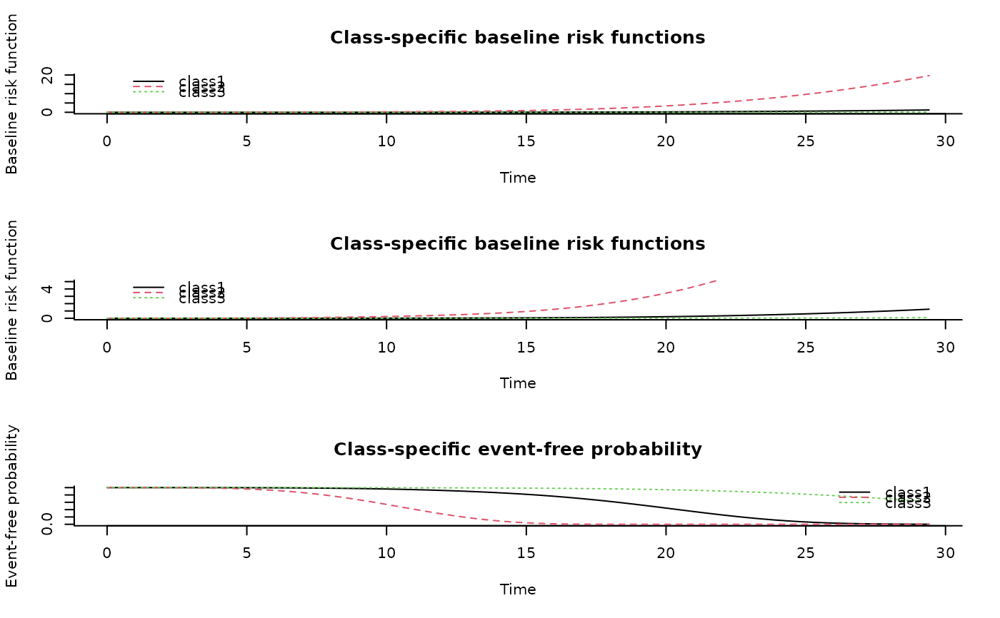

Estimation of joint latent class models for longitudinal and time-to-event data
Source:R/Jointlcmm.R
Jointlcmm.RdThis function fits joint latent class mixed models for a longitudinal
outcome and a right-censored (possibly left-truncated) time-to-event. The
function handles competing risks and Gaussian or non Gaussian (curvilinear)
longitudinal outcomes. For curvilinear longitudinal outcomes, normalizing
continuous functions (splines or Beta CDF) can be specified as in
lcmm.
Usage
Jointlcmm(
fixed,
mixture,
random,
subject,
classmb,
ng = 1,
idiag = FALSE,
nwg = FALSE,
survival,
hazard = "Weibull",
hazardtype = "Specific",
hazardnodes = NULL,
hazardrange = NULL,
TimeDepVar = NULL,
link = NULL,
intnodes = NULL,
epsY = 0.5,
range = NULL,
cor = NULL,
data,
B,
convB = 1e-04,
convL = 1e-04,
convG = 1e-04,
maxiter = 100,
nsim = 100,
prior = NULL,
pprior = NULL,
logscale = FALSE,
subset = NULL,
na.action = 1,
posfix = NULL,
partialH = FALSE,
verbose = FALSE,
returndata = FALSE,
var.time = NULL,
nproc = 1,
clustertype = NULL
)
jlcmm(
fixed,
mixture,
random,
subject,
classmb,
ng = 1,
idiag = FALSE,
nwg = FALSE,
survival,
hazard = "Weibull",
hazardtype = "Specific",
hazardnodes = NULL,
hazardrange = NULL,
TimeDepVar = NULL,
link = NULL,
intnodes = NULL,
epsY = 0.5,
range = NULL,
cor = NULL,
data,
B,
convB = 1e-04,
convL = 1e-04,
convG = 1e-04,
maxiter = 100,
nsim = 100,
prior = NULL,
pprior = NULL,
logscale = FALSE,
subset = NULL,
na.action = 1,
posfix = NULL,
partialH = FALSE,
verbose = FALSE,
returndata = FALSE,
var.time = NULL,
nproc = 1,
clustertype = NULL
)Arguments
- fixed
two-sided linear formula object for the fixed-effects in the linear mixed model. The response outcome is on the left of
~and the covariates are separated by+on the right of the~. By default, an intercept is included. If no intercept,-1should be the first term included on the right of~.- mixture
one-sided formula object for the class-specific fixed effects in the linear mixed model (to specify only for a number of latent classes greater than 1). Among the list of covariates included in
fixed, the covariates with class-specific regression parameters are entered inmixtureseparated by+. By default, an intercept is included. If no intercept,-1should be the first term included.- random
optional one-sided formula for the random-effects in the linear mixed model. Covariates with a random-effect are separated by
+. By default, an intercept is included. If no intercept,-1should be the first term included.- subject
name of the covariate representing the grouping structure (called subject identifier) specified with ''.
- classmb
optional one-sided formula describing the covariates in the class-membership multinomial logistic model. Covariates included are separated by
+. No intercept should be included in this formula.- ng
optional number of latent classes considered. If
ng=1(by default) nomixturenorclassmbshould be specified. Ifng>1,mixtureis required.- idiag
optional logical for the structure of the variance-covariance matrix of the random-effects. If
FALSE, a non structured matrix of variance-covariance is considered (by default). IfTRUEa diagonal matrix of variance-covariance is considered.- nwg
optional logical indicating if the variance-covariance of the random-effects is class-specific. If
FALSEthe variance-covariance matrix is common over latent classes (by default). IfTRUEa class-specific proportional parameter multiplies the variance-covariance matrix in each class (the proportional parameter in the last latent class equals 1 to ensure identifiability).- survival
two-sided formula object. The left side of the formula corresponds to a
surv()object of type "counting" for right-censored and left-truncated data (example:Surv(Time,EntryTime,Indicator)) or of type "right" for right-censored data (example:Surv(Time,Indicator)). Multiple causes of event can be considered in the Indicator (0 for censored, k for cause k of event). The right side of the formula specifies the names of covariates to include in the survival model withmixture()when the effect is class-specific (example:Surv(Time,Indicator) ~X1 + mixture(X2)for a class-common effect of X1 and a class-specific effect of X2). In the presence of competing events, covariate effects are common by default. Codecause(X3)specifies a cause-specific covariate effect for X3 on each cause of event whilecause1(X3)(orcause2(X3), ...) specifies a cause-specific effect of X3 on the first (or second, ...) cause only.- hazard
optional family of hazard function assumed for the survival model. By default, "Weibull" specifies a Weibull baseline risk function. Other possibilities are "piecewise" for a piecewise constant risk function or "splines" for a cubic M-splines baseline risk function. For these two latter families, the number of nodes and the location of the nodes should be specified as well, separated by
-. The number of nodes is entered first followed by-, then the location is specified with "equi", "quant" or "manual" for respectively equidistant nodes, nodes at quantiles of the times of event distribution or interior nodes entered manually in argumenthazardnodes. It is followed by-and finally "piecewise" or "splines" indicates the family of baseline risk function considered. Examples include "5-equi-splines" for M-splines with 5 equidistant nodes, "6-quant-piecewise" for piecewise constant risk over 5 intervals and nodes defined at the quantiles of the times of events distribution and "9-manual-splines" for M-splines risk function with 9 nodes, the vector of 7 interior nodes being entered in the argumenthazardnodes. In the presence of competing events, a vector of hazards should be provided such ashazard=c("Weibull","splines"with 2 causes of event, the first one modelled by a Weibull baseline cause-specific risk function and the second one by splines.- hazardtype
optional indicator for the type of baseline risk function when ng>1. By default "Specific" indicates a class-specific baseline risk function. Other possibilities are "PH" for a baseline risk function proportional in each latent class, and "Common" for a baseline risk function that is common over classes. In the presence of competing events, a vector of hazardtypes should be given.
- hazardnodes
optional vector containing interior nodes if
splinesorpiecewiseis specified for the baseline hazard function inhazard.- hazardrange
optional vector indicating the range of the survival times (that is the minimum and maximum). By default, the range is defined according to the minimum and maximum observed values of the survival times. The option should be used only for piecewise constant and Splines hazard functions.
- TimeDepVar
optional vector containing an intermediate time corresponding to a change in the risk of event. This time-dependent covariate can only take the form of a time variable with the assumption that there is no effect on the risk before this time and a constant effect on the risk of event after this time (example: initiation of a treatment to account for).
- link
optional family of link functions to estimate. By default, "linear" option specifies a linear link function leading to a standard linear mixed model (homogeneous or heterogeneous as estimated in
hlme). Other possibilities include "beta" for estimating a link function from the family of Beta cumulative distribution functions, "thresholds" for using a threshold model to describe the correspondence between each level of an ordinal outcome and the underlying latent process, and "Splines" for approximating the link function by I-splines. For this latter case, the number of nodes and the nodes location should be also specified. The number of nodes is first entered followed by-, then the location is specified with "equi", "quant" or "manual" for respectively equidistant nodes, nodes at quantiles of the marker distribution or interior nodes entered manually in argumentintnodes. It is followed by-and finally "splines" is indicated. For example, "7-equi-splines" means I-splines with 7 equidistant nodes, "6-quant-splines" means I-splines with 6 nodes located at the quantiles of the marker distribution and "9-manual-splines" means I-splines with 9 nodes, the vector of 7 interior nodes being entered in the argumentintnodes.- intnodes
optional vector of interior nodes. This argument is only required for a I-splines link function with nodes entered manually.
- epsY
optional definite positive real used to rescale the marker in (0,1) when the beta link function is used. By default, epsY=0.5.
- range
optional vector indicating the range of the outcome (that is the minimum and maximum). By default, the range is defined according to the minimum and maximum observed values of the outcome. The option should be used only for Beta and Splines transformations.
- cor
optional brownian motion or autoregressive process modeling the correlation between the observations. "BM" or "AR" should be specified, followed by the time variable between brackets. By default, no correlation is added.
- data
optional data frame containing the variables named in
fixed,mixture,random,classmbandsubject.- B
optional specification for the initial values for the parameters. Three options are allowed: (1) a vector of initial values is entered (the order in which the parameters are included is detailed in
detailssection). (2) nothing is specified. A preliminary analysis involving the estimation of a standard linear mixed model is performed to choose initial values. (3) when ng>1, a Jointlcmm object is entered. It should correspond to the exact same structure of model but with ng=1. The program will automatically generate initial values from this model. This specification avoids the preliminary analysis indicated in (2) Note that due to possible local maxima, theBvector should be specified and several different starting points should be tried.- convB
optional threshold for the convergence criterion based on the parameter stability. By default, convB=0.0001.
- convL
optional threshold for the convergence criterion based on the log-likelihood stability. By default, convL=0.0001.
- convG
optional threshold for the convergence criterion based on the derivatives. By default, convG=0.0001.
- maxiter
optional maximum number of iterations for the Marquardt iterative algorithm. By default, maxiter=150.
- nsim
optional number of points for the predicted survival curves and predicted baseline risk curves. By default, nsim=100.
- prior
optional name of a covariate containing a prior information about the latent class membership. The covariate should be an integer with values in 0,1,...,ng. Value O indicates no prior for the subject while a value in 1,...,ng indicates that the subject belongs to the corresponding latent class.
- pprior
optional vector specifying the names of the covariates containing the prior probabilities to belong to each latent class. These probabilities should be between 0 and 1 and should sum up to 1 for each subject.
- logscale
optional boolean indicating whether an exponential (logscale=TRUE) or a square (logscale=FALSE -by default) transformation is used to ensure positivity of parameters in the baseline risk functions. See details section
- subset
a specification of the rows to be used: defaults to all rows. This can be any valid indexing vector for the rows of data or if that is not supplied, a data frame made up of the variable used in formula.
- na.action
Integer indicating how NAs are managed. The default is 1 for 'na.omit'. The alternative is 2 for 'na.fail'. Other options such as 'na.pass' or 'na.exclude' are not implemented in the current version.
- posfix
Optional vector specifying the indices in vector B of the parameters that should not be estimated. Default to NULL, all parameters are estimated.
- partialH
optional logical for Piecewise and Splines baseline risk functions and Splines link functions only. Indicates whether the parameters of the baseline risk or link functions can be dropped from the Hessian matrix to define convergence criteria.
- verbose
logical indicating if information about computation should be reported. Default to TRUE.
- returndata
logical indicating if data used for computation should be returned. Default to FALSE, data are not returned.
- var.time
optional character indicating the name of the time variable.
- nproc
the number cores for parallel computation. Default to 1 (sequential mode).
- clustertype
optional character indicating the type of cluster for parallel computation.
Value
The list returned is:
- loglik
log-likelihood of the model
- best
vector of parameter estimates in the same order as specified in
Band detailed in sectiondetails- V
if the model converged (conv=1 or 3), vector containing the upper triangle matrix of variance-covariance estimates of
Bestwith exception for variance-covariance parameters of the random-effects for whichVcontains the variance-covariance estimates of the Cholesky transformed parameters displayed incholesky. If conv=2,Vcontains the second derivatives of the log-likelihood.- gconv
vector of convergence criteria: 1. on the parameters, 2. on the likelihood, 3. on the derivatives
- conv
status of convergence: =1 if the convergence criteria were satisfied, =2 if the maximum number of iterations was reached, =4 or 5 if a problem occured during optimisation
- call
the matched call
- niter
number of Marquardt iterations
- pred
table of individual predictions and residuals; it includes marginal predictions (pred_m), marginal residuals (resid_m), subject-specific predictions (pred_ss) and subject-specific residuals (resid_ss) averaged over classes, the observation (obs) and finally the class-specific marginal and subject-specific predictions (with the number of the latent class: pred_m_1,pred_m_2,...,pred_ss_1,pred_ss_2,...). If
var.timeis specified, the corresponding measurement time is also included.- pprob
table of posterior classification and posterior individual class-membership probabilities based on the longitudinal data and the time-to-event data
- pprobY
table of posterior classification and posterior individual class-membership probabilities based only on the longitudinal data
- predRE
table containing individual predictions of the random-effects: a column per random-effect, a line per subject
- cholesky
vector containing the estimates of the Cholesky transformed parameters of the variance-covariance matrix of the random-effects
- scoretest
Statistic of the Score Test for the conditional independence assumption of the longitudinal and survival data given the latent class structure. Under the null hypothesis, the statistics is a Chi-square with p degrees of freedom where p indicates the number of random-effects in the longitudinal mixed model. See Jacqmin-Gadda and Proust-Lima (2009) for more details.
- predSurv
table of predictions giving for the window of times to event (called "time"), the predicted baseline risk function in each latent class (called "RiskFct") and the predicted cumulative baseline risk function in each latent class (called "CumRiskFct").
- hazard
internal information about the hazard specification used in related functions
- data
the original data set (if returndata is TRUE)
Details
A. BASELINE RISK FUNCTIONS
For the baseline risk functions, the following parameterizations were considered. Be careful, parametrisations changed in lcmm_V1.5:
1. With the "Weibull" function: 2 parameters are necessary w_1 and w_2 so that the baseline risk function a_0(t) = w_1^2*w_2^2*(w_1^2*t)^(w_2^2-1) if logscale=FALSE and a_0(t) = exp(w_1)*exp(w_2)(t)^(exp(w_2)-1) if logscale=TRUE.
2. with the "piecewise" step function and nz nodes (y_1,...y_nz), nz-1 parameters are necesssary p_1,...p_nz-1 so that the baseline risk function a_0(t) = p_j^2 for y_j < t =< y_j+1 if logscale=FALSE and a_0(t) = exp(p_j) for y_j < t =< y_j+1 if logscale=TRUE.
3. with the "splines" function and nz nodes (y_1,...y_nz), nz+2 parameters are necessary s_1,...s_nz+2 so that the baseline risk function a_0(t) = sum_j s_j^2 M_j(t) if logscale=FALSE and a_0(t) = sum_j exp(s_j) M_j(t) if logscale=TRUE where M_j is the basis of cubic M-splines.
Two parametrizations of the baseline risk function are proposed (logscale=TRUE or FALSE) because in some cases, especially when the instantaneous risks are very close to 0, some convergence problems may appear with one parameterization or the other. As a consequence, we recommend to try the alternative parameterization (changing logscale option) when a joint latent class model does not converge (maximum number of iterations reached) where as convergence criteria based on the parameters and likelihood are small.
B. THE VECTOR OF PARAMETERS B
The parameters in the vector of initial values B or in the vector of
maximum likelihood estimates best are included in the following
order: (1) ng-1 parameters are required for intercepts in the latent class
membership model, and if covariates are included in classmb, ng-1
parameters should be entered for each one; (2) parameters for the baseline
risk function: 2 parameters for each Weibull, nz-1 for each piecewise
constant risk and nz+2 for each splines risk; this number should be
multiplied by ng if specific hazard is specified; otherwise, ng-1 additional
proportional effects are expected if PH hazard is specified; otherwise
nothing is added if common hazard is specified. In the presence of competing
events, the number of parameters should be adapted to the number of causes
of event; (3) for all covariates in survival, ng parameters are
required if the covariate is inside a mixture(), otherwise 1
parameter is required. Covariates parameters should be included in the same
order as in survival. In the presence of cause-specific effects, the
number of parameters should be multiplied by the number of causes; (4) for
all covariates in fixed, one parameter is required if the covariate
is not in mixture, ng parameters are required if the covariate is
also in mixture. Parameters should be included in the same order as
in fixed; (5) the variance of each random-effect specified in
random (including the intercept) if idiag=TRUE and the
inferior triangular variance-covariance matrix of all the random-effects if
idiag=FALSE; (6) only if nwg=TRUE, ng-1 parameters for
class-specific proportional coefficients for the variance covariance matrix
of the random-effects; (7) the variance of the residual error.
C. CAUTION
Some caution should be made when using the program:
(1) As the log-likelihood of a latent class model can have multiple maxima,
a careful choice of the initial values is crucial for ensuring convergence
toward the global maximum. The program can be run without entering the
vector of initial values (see point 2). However, we recommend to
systematically enter initial values in B and try different sets of
initial values.
(2) The automatic choice of initial values that we provide requires the
estimation of a preliminary linear mixed model. The user should be aware
that first, this preliminary analysis can take time for large datatsets and
second, that the generated initial values can be very not likely and even
may converge slowly to a local maximum. This is a reason why several
alternatives exist. The vector of initial values can be directly specified
in B the initial values can be generated (automatically or randomly)
from a model with ng=. Finally, function gridsearch performs
an automatic grid search.
(3) Convergence criteria are very strict as they are based on derivatives of the log-likelihood in addition to the parameter and log-likelihood stability. In some cases, the program may not converge and reach the maximum number of iterations fixed at 150. In this case, the user should check that parameter estimates at the last iteration are not on the boundaries of the parameter space. If the parameters are on the boundaries of the parameter space, the identifiability of the model is critical. This may happen especially when baseline risk functions involve splines (value close to the lower boundary - 0 with logscale=F -infinity with logscale=F) or classmb parameters that are too high or low (perfect classification) or linkfunction parameters. When identifiability of some parameters is suspected, the program can be run again from the former estimates by fixing the suspected parameters to their value with option posfix. This usually solves the problem. An alternative is to remove the parameters of the Beta of Splines link function from the inverse of the Hessian with option partialH. If not, the program should be run again with other initial values. Some problems of convergence may happen when the instantaneous risks of event are very low and "piecewise" or "splines" baseline risk functions are specified. In this case, changing the parameterization of the baseline risk functions with option logscale is recommended (see paragraph A for details).
References
Proust-Lima C, Philipps V, Liquet B (2017). Estimation of Extended Mixed Models Using Latent Classes and Latent Processes: The R Package lcmm. Journal of Statistical Software, 78(2), 1-56. doi:10.18637/jss.v078.i02
Lin, H., Turnbull, B. W., McCulloch, C. E. and Slate, E. H. (2002). Latent class models for joint analysis of longitudinal biomarker and event process data: application to longitudinal prostate-specific antigen readings and prostate cancer. Journal of the American Statistical Association 97, 53-65.
Proust-Lima, C. and Taylor, J. (2009). Development and validation of a dynamic prognostic tool for prostate cancer recurrence using repeated measures of post-treatment PSA: a joint modelling approach. Biostatistics 10, 535-49.
Jacqmin-Gadda, H. and Proust-Lima, C. (2010). Score test for conditional independence between longitudinal outcome and time-to-event given the classes in the joint latent class model. Biometrics 66(1), 11-9
Proust-Lima, Sene, Taylor and Jacqmin-Gadda (2014). Joint latent class models of longitudinal and time-to-event data: a review. Statistical Methods in Medical Research 23, 74-90.
Examples
# \dontrun{
#### Example of a joint latent class model estimated for a varying number
# of latent classes:
# The linear mixed model includes a subject- (ID) and class-specific
# linear trend (intercept and Time in fixed, random and mixture components)
# and a common effect of X1 and its interaction with time over classes
# (in fixed).
# The variance of the random intercept and slopes are assumed to be equal
# over classes (nwg=F).
# The covariate X3 predicts the class membership (in classmb).
# The baseline hazard function is modelled with cubic M-splines -3
# nodes at the quantiles- (in hazard) and a proportional hazard over
# classes is assumed (in hazardtype). Covariates X1 and X2 predict the
# risk of event (in survival) with a common effect over classes for X1
# and a class-specific effect of X2.
# !CAUTION: for illustration, only default initial values where used but
# other sets of initial values should be tried to ensure convergence
# towards the global maximum.
#### estimation with 1 latent class (ng=1): independent models for the
# longitudinal outcome and the time of event
m1 <- Jointlcmm(fixed= Ydep1~X1*Time,random=~Time,subject='ID',
survival = Surv(Tevent,Event)~ X1+X2 ,hazard="3-quant-splines",
hazardtype="PH",ng=1,data=data_lcmm)
summary(m1)
#> Joint latent class model for quantitative outcome and competing risks
#> fitted by maximum likelihood method
#>
#> Jointlcmm(fixed = Ydep1 ~ X1 * Time, random = ~Time, subject = "ID",
#> ng = 1, survival = Surv(Tevent, Event) ~ X1 + X2, hazard = "3-quant-splines",
#> hazardtype = "PH", data = data_lcmm)
#>
#> Statistical Model:
#> Dataset: data_lcmm
#> Number of subjects: 300
#> Number of observations: 1678
#> Number of latent classes: 1
#> Number of parameters: 15
#> Event 1:
#> Number of events: 150
#> M-splines constant baseline risk function with nodes
#> 0 11.3966 29.413
#>
#> Iteration process:
#> Convergence criteria satisfied
#> Number of iterations: 20
#> Convergence criteria: parameters= 1.8e-08
#> : likelihood= 7.7e-06
#> : second derivatives= 2.3e-05
#>
#> Goodness-of-fit statistics:
#> maximum log-likelihood: -3944.77
#> AIC: 7919.54
#> BIC: 7975.1
#> Score test statistic for CI assumption: 6.972 (p-value=0.0306)
#>
#> Maximum Likelihood Estimates:
#>
#> Parameters in the proportional hazard model:
#>
#> coef Se Wald p-value
#> event1 +/-sqrt(splines1) -0.00002 0.03608 -0.001 0.99956
#> event1 +/-sqrt(splines2) -0.00012 0.03508 -0.004 0.99717
#> event1 +/-sqrt(splines3) 0.71702 0.08667 8.273 0.00000
#> event1 +/-sqrt(splines4) 0.97684 0.15461 6.318 0.00000
#> event1 +/-sqrt(splines5) 0.19824 1.06538 0.186 0.85238
#> X1 0.08284 0.16411 0.505 0.61373
#> X2 0.58997 0.17572 3.357 0.00079
#>
#> Fixed effects in the longitudinal model:
#>
#> coef Se Wald p-value
#> intercept 10.56540 0.15584 67.795 0.00000
#> X1 1.47962 0.21803 6.786 0.00000
#> Time -1.65689 0.17293 -9.581 0.00000
#> X1:Time -0.08363 0.24237 -0.345 0.73004
#>
#>
#> Variance-covariance matrix of the random-effects:
#> intercept Time
#> intercept 0.92225
#> Time 0.56615 1.22619
#>
#> coef Se
#> Residual standard error 1.50053 0.02991
#>
#Goodness-of-fit statistics for m1:
# maximum log-likelihood: -3944.77 ; AIC: 7919.54 ; BIC: 7975.09
# }
#### estimation with 2 latent classes (ng=2)
m2 <- Jointlcmm(fixed= Ydep1~Time*X1,mixture=~Time,random=~Time,
classmb=~X3,subject='ID',survival = Surv(Tevent,Event)~X1+mixture(X2),
hazard="3-quant-splines",hazardtype="PH",ng=2,data=data_lcmm,
B=c(0.64,-0.62,0,0,0.52,0.81,0.41,0.78,0.1,0.77,-0.05,10.43,11.3,-2.6,
-0.52,1.41,-0.05,0.91,0.05,0.21,1.5))
summary(m2)
#> Joint latent class model for quantitative outcome and competing risks
#> fitted by maximum likelihood method
#>
#> Jointlcmm(fixed = Ydep1 ~ Time * X1, mixture = ~Time, random = ~Time,
#> subject = "ID", classmb = ~X3, ng = 2, survival = Surv(Tevent,
#> Event) ~ X1 + mixture(X2), hazard = "3-quant-splines",
#> hazardtype = "PH", data = data_lcmm)
#>
#> Statistical Model:
#> Dataset: data_lcmm
#> Number of subjects: 300
#> Number of observations: 1678
#> Number of latent classes: 2
#> Number of parameters: 21
#> Event 1:
#> Number of events: 150
#> Proportional hazards over latent classes and
#> M-splines constant baseline risk function with nodes
#> 0 11.3966 29.413
#>
#> Iteration process:
#> Convergence criteria satisfied
#> Number of iterations: 2
#> Convergence criteria: parameters= 1.7e-07
#> : likelihood= 2.9e-05
#> : second derivatives= 1.4e-05
#>
#> Goodness-of-fit statistics:
#> maximum log-likelihood: -3921.28
#> AIC: 7884.56
#> BIC: 7962.34
#> Score test statistic for CI assumption: 4.868 (p-value=0.0877)
#>
#> Maximum Likelihood Estimates:
#>
#> Fixed effects in the class-membership model:
#> (the class of reference is the last class)
#>
#> coef Se Wald p-value
#> intercept class1 0.64179 0.23639 2.715 0.00663
#> X3 class1 -0.62135 0.18720 -3.319 0.00090
#>
#> Parameters in the proportional hazard model:
#>
#> coef Se Wald p-value
#> event1 +/-sqrt(splines1) -0.00007 0.02194 -0.003 0.99752
#> event1 +/-sqrt(splines2) -0.00014 0.04412 -0.003 0.99747
#> event1 +/-sqrt(splines3) 0.50421 0.10396 4.850 0.00000
#> event1 +/-sqrt(splines4) 0.80901 0.15970 5.066 0.00000
#> event1 +/-sqrt(splines5) 0.43681 0.39996 1.092 0.27477
#> event1 SurvPH class1 0.78331 0.35394 2.213 0.02689
#> X1 0.10318 0.16729 0.617 0.53739
#> X2 class1 0.76963 0.20998 3.665 0.00025
#> X2 class2 -0.04521 0.57232 -0.079 0.93703
#>
#> Fixed effects in the longitudinal model:
#>
#> coef Se Wald p-value
#> intercept class1 10.42612 0.19161 54.414 0.00000
#> intercept class2 11.29780 0.23627 47.816 0.00000
#> Time class1 -2.59556 0.17992 -14.426 0.00000
#> Time class2 -0.52342 0.17642 -2.967 0.00301
#> X1 1.41450 0.22174 6.379 0.00000
#> Time:X1 -0.04995 0.20647 -0.242 0.80886
#>
#>
#> Variance-covariance matrix of the random-effects:
#> intercept Time
#> intercept 0.91249
#> Time 0.05005 0.21387
#>
#> coef Se
#> Residual standard error 1.50271 0.03000
#>
#Goodness-of-fit statistics for m2:
# maximum log-likelihood: -3921.27; AIC: 7884.54; BIC: 7962.32
# \dontrun{
#### estimation with 3 latent classes (ng=3)
m3 <- Jointlcmm(fixed= Ydep1~Time*X1,mixture=~Time,random=~Time,
classmb=~X3,subject='ID',survival = Surv(Tevent,Event)~ X1+mixture(X2),
hazard="3-quant-splines",hazardtype="PH",ng=3,data=data_lcmm,
B=c(0.77,0.4,-0.82,-0.27,0,0,0,0.3,0.62,2.62,5.31,-0.03,1.36,0.82,
-13.5,10.17,10.24,11.51,-2.62,-0.43,-0.61,1.47,-0.04,0.85,0.04,0.26,1.5))
summary(m3)
#> Joint latent class model for quantitative outcome and competing risks
#> fitted by maximum likelihood method
#>
#> Jointlcmm(fixed = Ydep1 ~ Time * X1, mixture = ~Time, random = ~Time,
#> subject = "ID", classmb = ~X3, ng = 3, survival = Surv(Tevent,
#> Event) ~ X1 + mixture(X2), hazard = "3-quant-splines",
#> hazardtype = "PH", data = data_lcmm)
#>
#> Statistical Model:
#> Dataset: data_lcmm
#> Number of subjects: 300
#> Number of observations: 1678
#> Number of latent classes: 3
#> Number of parameters: 27
#> Event 1:
#> Number of events: 150
#> Proportional hazards over latent classes and
#> M-splines constant baseline risk function with nodes
#> 0 11.3966 29.413
#>
#> Iteration process:
#> Convergence criteria satisfied
#> Number of iterations: 29
#> Convergence criteria: parameters= 4.3e-07
#> : likelihood= 1.1e-09
#> : second derivatives= 6.7e-11
#>
#> Goodness-of-fit statistics:
#> maximum log-likelihood: -3890.05
#> AIC: 7834.1
#> BIC: 7934.1
#> Score test statistic for CI assumption: 0.637 (p-value=0.7274)
#>
#> Maximum Likelihood Estimates:
#>
#> Fixed effects in the class-membership model:
#> (the class of reference is the last class)
#>
#> coef Se Wald p-value
#> intercept class1 0.75756 0.22141 3.422 0.00062
#> intercept class2 0.40955 0.24279 1.687 0.09163
#> X3 class1 -0.82323 0.21625 -3.807 0.00014
#> X3 class2 -0.27369 0.20649 -1.325 0.18503
#>
#> Parameters in the proportional hazard model:
#>
#> coef Se Wald p-value
#> event1 +/-sqrt(splines1) 0.00000 0.00423 0.000 1.00000
#> event1 +/-sqrt(splines2) 0.00000 0.00894 0.000 0.99999
#> event1 +/-sqrt(splines3) 0.00000 0.02692 0.000 0.99998
#> event1 +/-sqrt(splines4) 0.28375 0.11500 2.467 0.01361
#> event1 +/-sqrt(splines5) 0.63381 0.19725 3.213 0.00131
#> event1 SurvPH class1 2.63246 0.63219 4.164 0.00003
#> event1 SurvPH class2 5.39638 0.77249 6.986 0.00000
#> X1 -0.02725 0.21981 -0.124 0.90134
#> X2 class1 1.39796 0.34967 3.998 0.00006
#> X2 class2 0.81682 0.35735 2.286 0.02227
#> X2 class3 -15.00568 727.90723 -0.021 0.98355
#>
#> Fixed effects in the longitudinal model:
#>
#> coef Se Wald p-value
#> intercept class1 10.16395 0.21262 47.803 0.00000
#> intercept class2 10.23942 0.32064 31.935 0.00000
#> intercept class3 11.51088 0.24749 46.511 0.00000
#> Time class1 -2.62195 0.18621 -14.081 0.00000
#> Time class2 -0.45529 0.42106 -1.081 0.27956
#> Time class3 -0.60547 0.18213 -3.324 0.00089
#> X1 1.47305 0.21620 6.813 0.00000
#> Time:X1 -0.03833 0.20343 -0.188 0.85055
#>
#>
#> Variance-covariance matrix of the random-effects:
#> intercept Time
#> intercept 0.85124
#> Time 0.03889 0.26245
#>
#> coef Se
#> Residual standard error 1.49821 0.02976
#>
#Goodness-of-fit statistics for m3:
# maximum log-likelihood: -3890.26 ; AIC: 7834.53; BIC: 7934.53
#### estimation with 4 latent classes (ng=4)
m4 <- Jointlcmm(fixed= Ydep1~Time*X1,mixture=~Time,random=~Time,
classmb=~X3,subject='ID',survival = Surv(Tevent,Event)~ X1+mixture(X2),
hazard="3-quant-splines",hazardtype="PH",ng=4,data=data_lcmm,
B=c(0.54,-0.42,0.36,-0.94,-0.64,-0.28,0,0,0,0.34,0.59,2.6,2.56,5.26,
-0.1,1.27,1.34,0.7,-5.72,10.54,9.02,10.2,11.58,-2.47,-2.78,-0.28,-0.57,
1.48,-0.06,0.61,-0.07,0.31,1.5))
summary(m4)
#> Joint latent class model for quantitative outcome and competing risks
#> fitted by maximum likelihood method
#>
#> Jointlcmm(fixed = Ydep1 ~ Time * X1, mixture = ~Time, random = ~Time,
#> subject = "ID", classmb = ~X3, ng = 4, survival = Surv(Tevent,
#> Event) ~ X1 + mixture(X2), hazard = "3-quant-splines",
#> hazardtype = "PH", data = data_lcmm)
#>
#> Statistical Model:
#> Dataset: data_lcmm
#> Number of subjects: 300
#> Number of observations: 1678
#> Number of latent classes: 4
#> Number of parameters: 33
#> Event 1:
#> Number of events: 150
#> Proportional hazards over latent classes and
#> M-splines constant baseline risk function with nodes
#> 0 11.3966 29.413
#>
#> Iteration process:
#> Convergence criteria satisfied
#> Number of iterations: 23
#> Convergence criteria: parameters= 1e-10
#> : likelihood= 1.4e-12
#> : second derivatives= 4.2e-10
#>
#> Goodness-of-fit statistics:
#> maximum log-likelihood: -3886.79
#> AIC: 7839.57
#> BIC: 7961.8
#> Score test statistic for CI assumption: 0.346 (p-value=0.8409)
#>
#> Maximum Likelihood Estimates:
#>
#> Fixed effects in the class-membership model:
#> (the class of reference is the last class)
#>
#> coef Se Wald p-value
#> intercept class1 0.53190 0.32083 1.658 0.09734
#> intercept class2 -0.43372 0.75883 -0.572 0.56761
#> intercept class3 0.37259 0.25684 1.451 0.14686
#> X3 class1 -0.94387 0.25601 -3.687 0.00023
#> X3 class2 -0.63606 0.31291 -2.033 0.04208
#> X3 class3 -0.28567 0.21009 -1.360 0.17392
#>
#> Parameters in the proportional hazard model:
#>
#> coef Se Wald p-value
#> event1 +/-sqrt(splines1) 0.00000 0.00470 0.000 0.99998
#> event1 +/-sqrt(splines2) 0.00000 0.00979 0.000 1.00000
#> event1 +/-sqrt(splines3) 0.00000 0.03174 0.000 0.99995
#> event1 +/-sqrt(splines4) 0.31294 0.13189 2.373 0.01766
#> event1 +/-sqrt(splines5) 0.59938 0.19421 3.086 0.00203
#> event1 SurvPH class1 2.61561 0.68721 3.806 0.00014
#> event1 SurvPH class2 2.60884 0.92257 2.828 0.00469
#> event1 SurvPH class3 5.35037 0.78672 6.801 0.00000
#> X1 -0.09759 0.23075 -0.423 0.67233
#> X2 class1 1.31521 0.45671 2.880 0.00398
#> X2 class2 1.37384 0.87228 1.575 0.11526
#> X2 class3 0.70985 0.38073 1.864 0.06226
#> X2 class4 -14.76730 1359.85851 -0.011 0.99134
#>
#> Fixed effects in the longitudinal model:
#>
#> coef Se Wald p-value
#> intercept class1 10.53172 0.32850 32.060 0.00000
#> intercept class2 9.01620 0.63969 14.095 0.00000
#> intercept class3 10.21078 0.32793 31.137 0.00000
#> intercept class4 11.57527 0.23866 48.501 0.00000
#> Time class1 -2.46960 0.24229 -10.193 0.00000
#> Time class2 -2.78091 0.37354 -7.445 0.00000
#> Time class3 -0.31449 0.47238 -0.666 0.50556
#> Time class4 -0.57283 0.18578 -3.083 0.00205
#> X1 1.48476 0.21615 6.869 0.00000
#> Time:X1 -0.05422 0.20810 -0.261 0.79444
#>
#>
#> Variance-covariance matrix of the random-effects:
#> intercept Time
#> intercept 0.61385
#> Time -0.06706 0.30641
#>
#> coef Se
#> Residual standard error 1.49827 0.02976
#>
#Goodness-of-fit statistics for m4:
# maximum log-likelihood: -3886.93 ; AIC: 7839.86; BIC: 7962.09
##### The model with 3 latent classes is retained according to the BIC
##### and the conditional independence assumption is not rejected at
##### the 5% level.
# posterior classification
plot(m3,which="postprob")
# Class-specific predicted baseline risk & survival functions in the
# 3-class model retained (for the reference value of the covariates)
plot(m3,which="baselinerisk",bty="l")
plot(m3,which="baselinerisk",ylim=c(0,5),bty="l")
plot(m3,which="survival",bty="l")

# class-specific predicted trajectories in the 3-class model retained
# (with characteristics of subject ID=193)
data <- data_lcmm[data_lcmm$ID==193,]
plot(predictY(m3,var.time="Time",newdata=data,bty="l"))
# predictive accuracy of the model evaluated with EPOCE
vect <- 1:15
cvpl <- epoce(m3,var.time="Time",pred.times=vect)
#> Be patient, epoce function is running ...
#> The program took 1.89 seconds
summary(cvpl)
#> Expected Prognostic Observed Cross-Entropy (EPOCE) of the joint latent class model:
#>
#> Jointlcmm(fixed = Ydep1 ~ Time * X1, mixture = ~Time, random = ~Time,
#> subject = "ID", classmb = ~X3, ng = 3, survival = Surv(Tevent,
#> Event) ~ X1 + mixture(X2), hazard = "3-quant-splines",
#> hazardtype = "PH", data = data_lcmm)
#>
#> EPOCE estimators on data used for estimation:
#> Mean Prognostic Observed Log-likelihood (MPOL)
#> and Cross-validated Prognostic Observed Log-likelihood (CVPOL)
#> (CVPOL is the bias-corrected MPOL obtained by approximated cross-validation)
#>
#> pred. times N at risk N events MPOL CVPOL
#> 1 300 150 1.783568 1.820241
#> 2 300 150 1.742254 1.790633
#> 3 299 150 1.826218 1.863230
#> 4 296 150 1.949889 1.993681
#> 5 291 149 2.017346 2.052373
#> 6 275 139 2.015122 2.040244
#> 7 258 127 1.815015 1.834785
#> 8 229 116 1.840222 1.860101
#> 9 205 107 1.883315 1.904273
#> 10 184 97 1.914311 1.932993
#> 11 158 81 1.712072 1.736477
#> 12 143 75 1.695109 1.715466
#> 13 129 68 1.779851 1.784777
#> 14 116 59 1.390196 1.413929
#> 15 99 49 1.492425 1.498591
#>
plot(cvpl,bty="l",ylim=c(0,2))
############## end of example ##############
# }